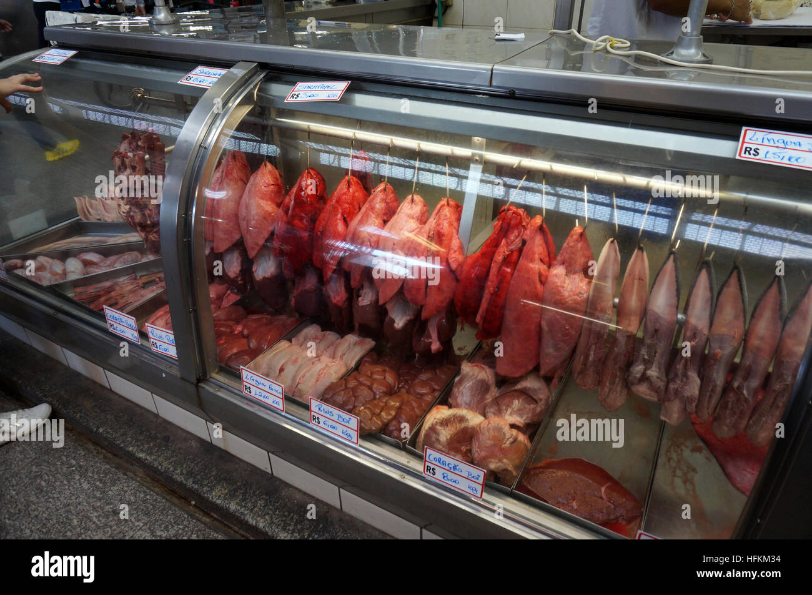

Quando você compra carne ou leite, talvez não pense no caminho que esses alimentos fizeram. Tudo começa nas fazendas, onde os animais são criados com cuidado e alimentação adequada. Depois, passam por processos de transporte, controle de qualidade e distribuição.
É um trabalho em cadeia, com várias etapas e pessoas envolvidas. Sem o produtor rural, a comida não chegaria aos mercados e restaurantes da cidade. Por isso, é importante valorizar quem está na origem de tudo isso.
